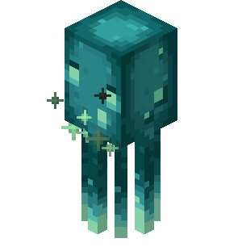
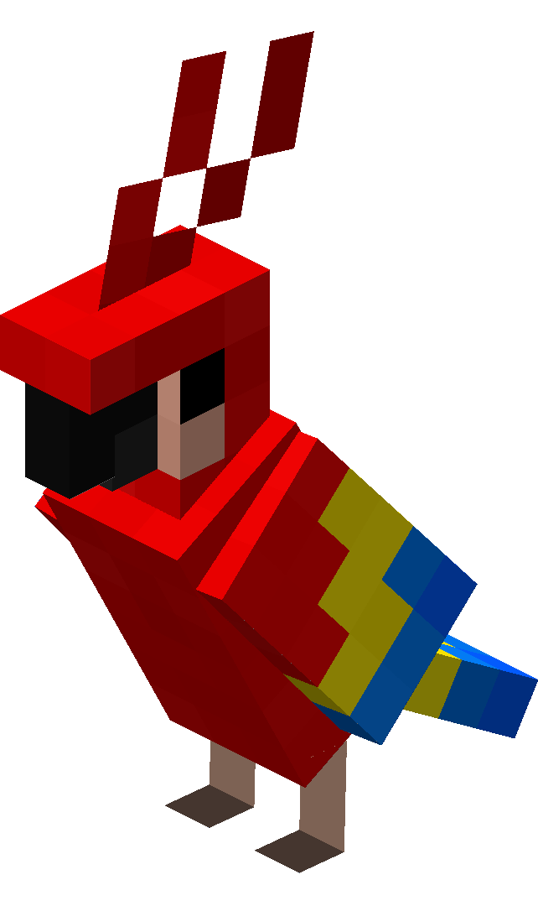
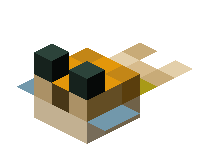
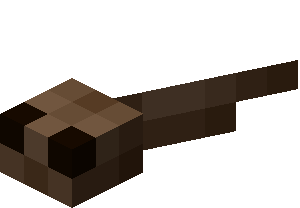
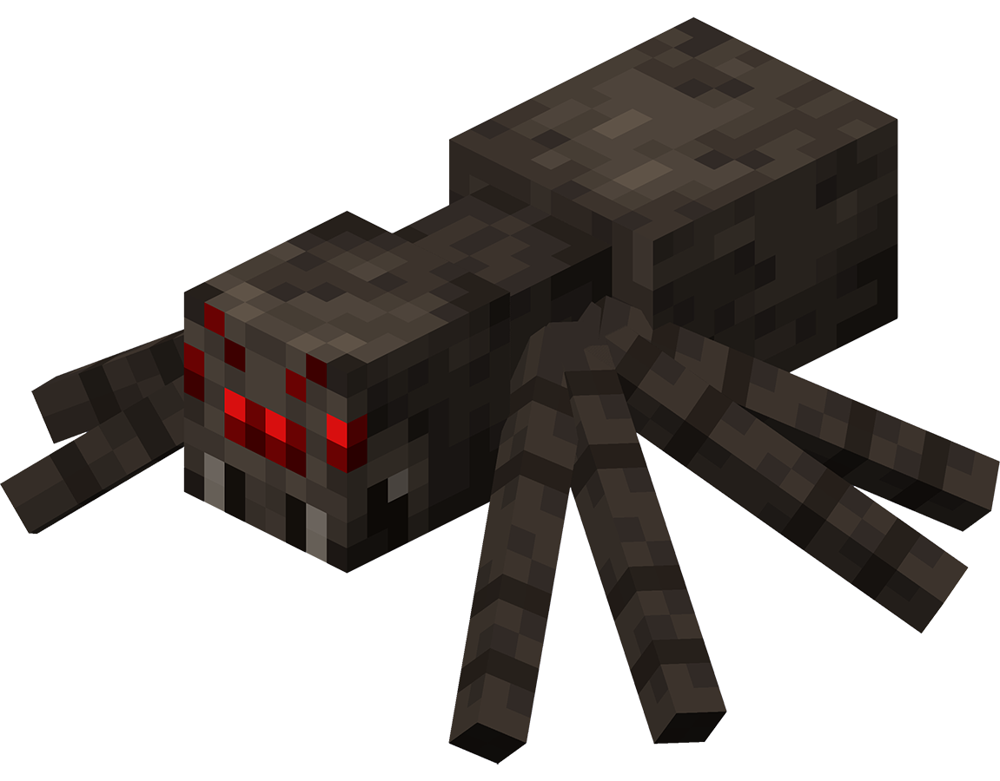
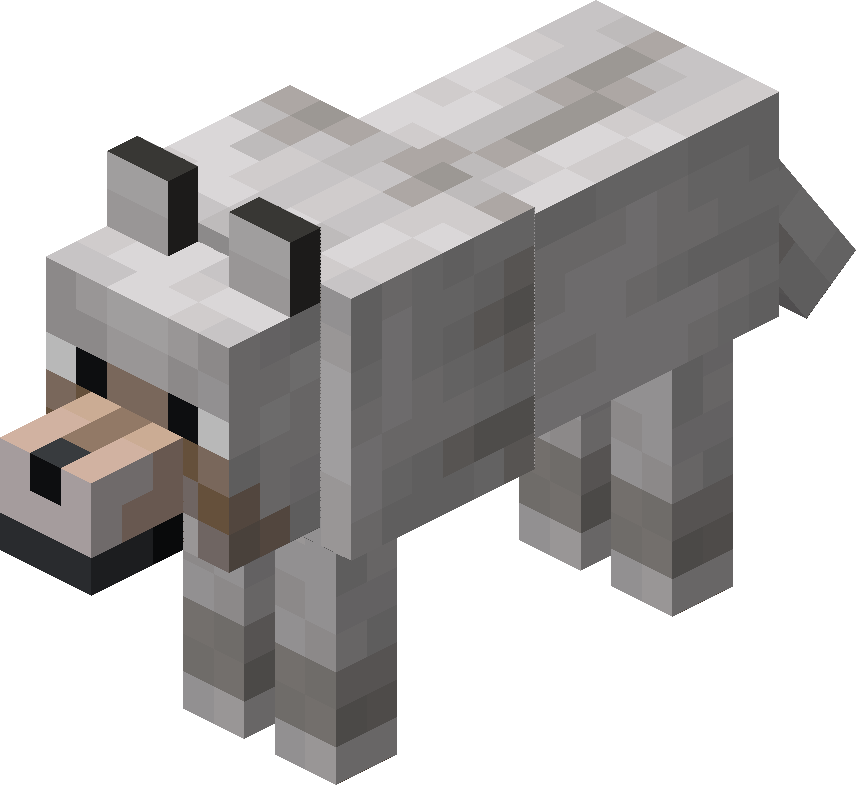
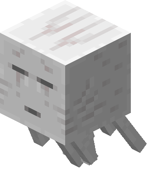
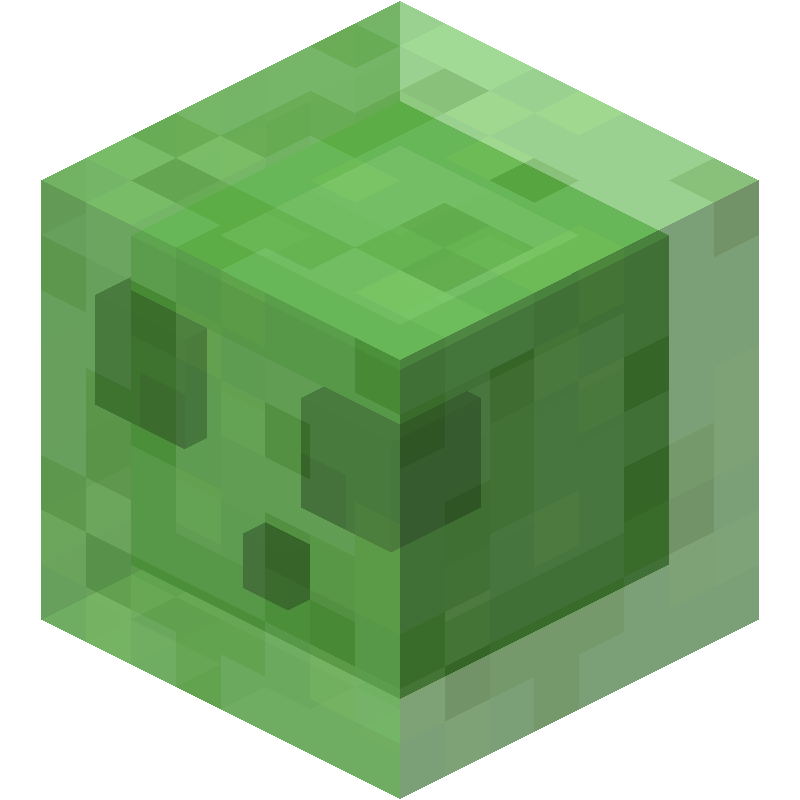
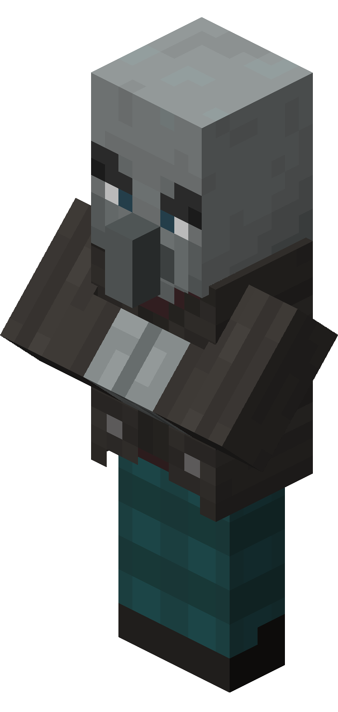

In the vast world of Minecraft, mobs are the diverse array of creatures that inhabit its landscapes. From the serene pastures to the fiery depths of the Nether, these entities add life and challenge to the player's adventures. Mobs come in all shapes and sizes, ranging from peaceful animals like cows and sheep to menacing foes like skeletons and creepers. Each mob has its own unique behaviors and interactions, making exploration and survival in Minecraft an ever-changing experience.
Certain mobs are exclusive to specific biomes or dimensions within the game. For instance, the Nether is home to ghasts, blazes, and piglins, while the End is inhabited by endermen, shulkers, and the formidable ender dragon. These distinct environments offer varied challenges and rewards for players brave enough to venture into them. Understanding the behaviors and characteristics of each mob is essential for survival, as players must adapt their strategies accordingly to overcome the dangers they encounter.
Mobs play a crucial role in Minecraft's gameplay, providing resources, combat encounters, and opportunities for exploration. Whether players are navigating treacherous caves, building bustling villages, or embarking on epic quests, the diverse cast of mobs adds depth and excitement to every aspect of the game. Mastering the art of mob interaction is key to thriving in the ever-evolving world of Minecraft.
| Mob Name and Image | Description |
|---|---|
Allay  |
The allay is a flying passive mob in Minecraft that acts as a helpful assistant, collecting and delivering items for players who give it something or any note block it hears recently playing. You can find allays sometimes in cages of pillager outposts. |
| Armadillo |
Armadillos are passive mobs found in badlands and savannas in Minecraft. They roll up in response to being hurt or being near undead mobs or players that are sprinting or mounted. While in this state, they take less damage. They also repel spiders and cave spiders away from them. They are the only source of armadillo scutes, which the armadillo sheds over time, as well as when it is brushed. |
Axolotl  |
The axolotl is a passive bucketable aquatic mob in Minecraft found in lush caves. It actively hunts most other aquatic mobs and can assist players with aquatic combat, even granting them Regeneration. |
| Bat |
A bat is a flying ambient passive mob in Minecraft that spawns in dark areas underground. |
Brown Mooshroom  |
Brown Mooshrooms are mobs that don't naturally spawn in Minecraft. They can only be spawned when a lightning strike occurs nearby a red Mooshroom. |
Camel  |
A camel is a tameable passive mob in Minecraft found in desert villages. They can be saddled and ridden by up to two players simultaneously. Their height prevents riders from being reached by some melee-attacking harmful mobs, who do not attack the camel. |
Cat  |
A cat is a passive mob in Minecraft found in villages and swamp huts. They can be tamed and used to repel creepers and phantoms. |
Chicken  |
A chicken is a passive mob in Minecraft found in grass biomes and is the main source of raw chicken, feathers, and eggs. They can also be attached to a lead. |
Cod  |
Cod are common bucketable aquatic passive mobs found in oceans in Minecraft. They are a source of raw cod and occasionally drop bones in the Bedrock Edition or bone meal in the Java Edition. |
Cow  |
A cow is a passive mob found in most grassy biomes in Minecraft. They are a source of leather, beef, and milk. |
| Donkey |
Donkeys are mobs similar to horses in Minecraft. When tamed, they can be ridden and equipped with chests, providing additional storage while traveling. |
Frog  |
A frog is a passive mob found in swamps in Minecraft. Frogs eat small slimes and magma cubes. When a frog eats a magma cube, it can produce one of three kinds of froglights, depending on the type of frog. The type of frog is dependent on the location in the game. |
| Glow Squid  |
The glow squid is an aquatic passive mob in Minecraft found in dark underwater areas, such as ocean depths, ravines, and underground lakes. It is a variety of squid with an aqua luminescent texture. Glow squids were ported to vanilla Minecraft from Minecraft Earth. |
| Horse |
Horses are passive mobs in Minecraft that can be ridden once tamed and saddled. |
Red Mooshroom  |
Red Mooshrooms are red-mushroom-covered variants of cows exclusive to the rare mushroom fields biome in Minecraft, as they commonly spawn there. |
| Mule |
Mules are infertile offspring of horses and donkeys in Minecraft. When tamed, they can be ridden and equipped with chests, providing additional storage while traveling. |
Ocelot  |
An ocelot is a passive mob that may be found in jungles in Minecraft. |
| Parrot  |
A parrot is a tameable passive mob that spawns in jungle biomes in Minecraft. Parrots imitate sounds of nearby monsters and can perch on the player's shoulders. |
Pig  |
A pig is a passive mob found commonly in most grass biomes in Minecraft. Pigs are a source of porkchops and can be equipped with a saddle to be ridden. |
| Pufferfish  |
Pufferfish are bucketable aquatic mobs found in oceans in Minecraft. Although they never seek out mobs to attack, they defensively inflate themselves when approached too closely by players, axolotls, or non-aquatic mobs, dealing damage and inflicting Poison on them. |
Rabbit  |
A rabbit is an uncommon passive mob in Minecraft and is a source of rabbit's foot, rabbit hide, and raw rabbit meat. |
Salmon  |
Salmon are common bucketable aquatic passive mobs found in oceans and rivers in Minecraft. They are a source of raw salmon and occasionally drop bones in the Bedrock Edition or bone meal in the Java Edition. |
Sheep  |
Sheep are common passive mobs in Minecraft that supply wool and raw mutton. They are found in many grassy biomes. |
| Skeleton Horse |
A skeleton horse is an undead variant of the horse in Minecraft. It sometimes spawns when lightning strikes, causing four horsemen to appear if the trap horse is approached. |
| Sniffer |
A sniffer is a passive mob in Minecraft that does not spawn naturally. It only appears by hatching from sniffer eggs. Sniffers sniff for seeds of various unique decorative plants, seeking and digging out the seeds in dirt, grass, and moss blocks. |
Snow Golem  |
A snow golem is a buildable passive mob in Minecraft that throws snowballs at monsters, which provokes them into attacking it. Depending on the biome temperature, it also either produces a trail of snow or takes heat damage and dies. |
Squid  |
A squid is a common aquatic passive mob in Minecraft that spawns in rivers and oceans. |
Strider  |
Striders are the only passive mobs native to the Nether in Minecraft. They can walk or stride on lava and be saddled by the player. To control a strider, a warped fungus on a stick is needed, similar to how a pig is controlled by a carrot on a stick. |
| Tadpole  |
A tadpole is a bucketable aquatic baby passive mob hatched from frogspawn in Minecraft. They mature into one of the three frog variants depending on the biome in which they mature. |
| Tropical Fish |
Tropical fish are common bucketable aquatic passive mobs found in oceans, mangrove swamps, and lush caves in Minecraft. There are 2,700 naturally occurring variants of tropical fish of different colors and shapes with unique names in Bedrock Edition and 3,072 in Java Edition. |
Turtle  |
A turtle (in Java Edition), also known as a sea turtle (in Bedrock Edition), is a common passive mob found in beach biomes in Minecraft. They are the only source of scutes, which drop from baby turtles when they mature into adults. |
Villager  |
Villagers are passive mobs that inhabit villages in Minecraft. They work at their professions, breed, and interact with each other. Their outfit varies according to their occupation and biome. Players can trade with them using emeralds as currency. |
Wandering Trader  |
The wandering trader is a passive mob in Minecraft that randomly spawns near the player. It can trade, making natural items more available, less dangerous to obtain, and in some cases, renewable. |

| Mob Name and Image | Description |
|---|---|
Bee  |
Bees are flying neutral mobs in Minecraft that live in bee nests and beehives. They pollinate flowers and, when they do, add honey to their home when they return to it. When full, bee nests or beehives can be harvested with shears for honeycombs or glass bottles for honey bottles. If provoked by being attacked or if their hive or nest is broken or harvested without the correct precautions, bees suicidally attack in a swarm. |
| Cave Spider |
Cave spiders are small variants of spiders in Minecraft that inflict Poison with their attacks. They are exclusively spawned by monster spawners found in mineshafts. |
Dolphin  |
Dolphins are neutral mobs in Minecraft that live in non-frozen oceans. They grant a speed boost to players that swim near them. |
Drowned  |
Drowned are neutral mobs and common underwater zombie variants in Minecraft. They spawn in oceans, rivers, and dripstone caves, or when zombies drown. They usually attack through melee attacks but may also come armed with tridents that they throw. They are the only source of tridents and the only renewable source of copper. |
| Enderman |
An enderman is a tall neutral mob found in all three dimensions in Minecraft. Endermen normally ignore players but run to attack those that damage them or look directly at their face. They teleport to avoid water (which harms them), sunlight, projectiles, and some other damage sources, and they occasionally pick up certain blocks. |
Fox  |
A fox is a neutral mob that spawns in cold and snowy forested biomes in Minecraft. They are able to carry a single item in their mouth, but they prefer food over other items. |
| Goat |
A goat is a neutral mob found in certain mountainous biomes in Minecraft. Goats can jump especially high and ram mobs. They are a source of goat horns and milk. |
Iron Golem  |
An iron golem is a buildable neutral mob in Minecraft that attacks monsters with its arms, knocking them into the air. Iron golems created by villagers or spawned in villages patrol their village and may attack players that attack them or have a low popularity or reputation with their village. |
Llama  |
A llama is a tameable neutral mob in Minecraft used to transport large shipments of items. |
| Panda |
A panda is a rare neutral mob in Minecraft that resides in jungles. Certain aspects of a panda's behavior and appearance vary depending on its personality. |
| Piglin |
A piglin is a neutral mob found in the Nether in Minecraft. It is hostile to players unless they wear at least one piece of golden armor. Piglins can be given gold ingots to barter for various items. They wield either a golden sword or a crossbow and use either melee or ranged attacks, respectively. Baby piglins do not grow up, never hold weapons or attack, and take gold without giving anything in return. |
Polar Bear  |
Polar bears are neutral mobs that live in icy biomes in Minecraft. |
| Spider  |
A spider is a hostile mob in Minecraft that attacks the player in dark areas. Spiders attack by biting the target, and they can also climb walls and lunge at them. |
| Trader Llama |
A trader llama is a special variant that follows wandering traders. |
| Wolf  |
A wolf is a neutral mob in Minecraft that can be tamed and used to assist in combat with most hostile mobs. |
| Zombified Piglin |
Zombified piglins, previously known as zombie pigmen before the Nether Update, are neutral undead variants of piglins that inhabit the Nether in Minecraft. Zombified piglins normally ignore players, but if one is attacked, it and all zombified piglins in the vicinity become enraged and attack the aggressor with their golden swords. |
| Mob Name and Image | Description |
|---|---|
| Blaze |
A blaze is a hostile mob found in Nether fortresses in Minecraft and is the only source of blaze rods. When attacking something, a blaze floats upwards and shoots fireballs at its target in volleys of three at a time. It can also attack its target in melee range with its spinning rods. |
| Bogged |
A bogged is a skeleton variant covered in moss and mushrooms that spawns in swamps and mangrove swamps in Minecraft. Their behavior is similar to that of skeletons, except bogged fire tipped arrows of Poison from their bows and at a slower rate than their counterparts. |
Breeze  |
A breeze is a hostile mob spawned by certain trial spawners in trial chambers in Minecraft. It moves via jumping large distances and attacks by firing wind charges, which deal high knockback and interact with buttons, levers, non-iron doors, and similar blocks in a radius. Additionally, breezes can repel all projectiles, including arrows and thrown tridents, taking no damage from them. |
| Creeper & Charged V. |
A creeper is a common hostile mob in Minecraft that quietly approaches players and then explodes, which can destroy blocks and deal massive amounts of damage. When struck by lightning, a creeper becomes a charged creeper, which amplifies its explosion power and enables mob heads to be obtained from piglins, zombies, skeletons, and other creepers it kills. Due to its distinctive appearance and unique and destructive method of attack, the creeper has become one of the most iconic mobs of Minecraft, being featured in promotional material and merchandise. |
| Elder Guardian |
An elder guardian is a stronger and larger variant of the guardian, and the largest aquatic mob in Minecraft. It attacks the same way as a normal guardian but also applies Mining Fatigue to players in a large radius around itself. They are only found in ocean monuments, with three of them generating in each one. |
Endermite  |
Endermites are small hostile mobs in Minecraft similar to silverfish that sometimes spawn when a player throws an ender pearl. They attack by dealing melee damage. Endermen are hostile toward endermites. |
| Evoker |
An evoker is a spell-casting illager in Minecraft that can be found in woodland mansions and raids. It is the only source of the totem of undying. The evoker uses two spells to attack: one that summons armor-piercing fangs and one that summons vexes. |
| Ghast  |
Ghasts are large, floating, ghost-like hostile mobs found in the Nether in Minecraft. They wander aimlessly and shoot explosive fireballs at players, which can be hit back to kill them instantly upon direct impact. |
Guardian  |
Guardians are pufferfish-like hostile mobs that spawn in and around ocean monuments in Minecraft. They attack with a slow-charging laser beam and inflict retaliatory damage when damaged by a melee attack. |
Hoglin  |
A hoglin is a breedable hostile mob found in the Nether in Minecraft and is a source of porkchops and leather. Hoglins are repelled by warped fungi that are placed in the world, as well as active nether portals and respawn anchors. They attack by thrusting their tusks upward, which can also launch their target a short distance into the air. Baby hoglins behave similarly, but have a much weaker attack (the weakest attack in the game) with normal knockback and flee when hit. |
Husk  |
A husk is a variant of a zombie that spawns in deserts in Minecraft. They function similarly to zombies, except they do not burn in sunlight and inflict Hunger with their unarmed attacks. |
| Magma Cude |
A magma cube is a hostile mob found in the Nether in Minecraft. It behaves similarly to a slime but is fireproof, jumps higher and less often, and deals more damage. |
Phantom  |
Phantoms are flying undead hostile mobs in Minecraft that spawn in the night sky when the player has not slept in a bed or died for three or more in-game days. They attack by diving at the player from the sky to bite them. |
Piglin Brute  |
A piglin brute is a hostile and stronger variant of piglins that appears in all types of bastion remnants in Minecraft. Unlike piglins, they do not barter, retreat, or be diverted by gold, instead always charging at the player on sight with their golden axes. |
Pillager  |
A pillager is an illager armed with a crossbow found in wandering patrols, in pillager outposts, or as a participant in raids in Minecraft. It attacks by firing arrows at the player. |
| Ravager |
Ravagers are large hostile mobs that only spawn alongside illagers in raids in Minecraft. They attack players, adult villagers, wandering traders, and iron golems by running at them and biting them. They can be briefly stunned by being blocked with a shield, but after recovering, they roar, damaging and knocking away all nearby entities. |
Shulker  |
A shulker is a box-shaped hostile mob found in end cities in Minecraft. It hides in its shell to protect itself and blend in with its surroundings, and attacks by shooting homing bullets which inflict Levitation. It is the only source of shulker shells, which are used to craft shulker boxes. |
Silverfish  |
Silverfish are small hostile mobs in Minecraft that infest stone and deepslate blocks in mountains, strongholds, igloo basements, and woodland mansions. They crawl at their targets to bite them, and attacking them incites other nearby silverfish to emerge from their blocks and attack the aggressor. |
Skeleton  |
A skeleton is an undead hostile mob in Minecraft that performs ranged attacks with a bow. |
| Slime  |
Slimes are bouncy, cube-shaped hostile mobs in Minecraft that spawn deep underground in particular chunks or on the surface in swamp biomes. They attack by jumping at their targets, come in three sizes, and larger slimes can split into smaller ones upon death. |
Stray  |
A stray is a variant of a skeleton in Minecraft that spawns in a few snow-covered biomes. They behave similarly to skeletons, except they fire tipped arrows of Slowness from their bows. |
| Vex |
The vex is a small flying hostile mob wielding an iron sword in Minecraft, and it is summoned only by evokers. It attacks by lunging at its target with its sword and is capable of phasing through walls. |
| Vindicator  |
A vindicator is an illager equipped with an iron axe in Minecraft. Vindicators appear in woodland mansions and participate in raids. They sprint toward their targets to attack them with their axe. |
| Warden |
A warden is a powerful but evadable hostile mob summoned by sculk shriekers in the deep dark biome in Minecraft. It attacks by swinging its arms downward, dealing the highest melee damage of all mobs, or with its sonic boom attack which cannot be blocked by obstacles or armor. Wardens are completely blind and rely only on vibrations, smell, and touch to detect players and mobs to attack, and can therefore be evaded via sneaking, diversions (snowballs, arrows, etc.), and wool. |
| Witch |
The witch is a hostile mob in Minecraft that uses potions in combat. It employs various splash potions for offense and drinkable potions for defense. |
Wither Skeleton  |
Wither skeletons are tall black variants of skeletons equipped with stone swords in Minecraft. They inflict the poison-like Wither effect. They are found exclusively in nether fortresses and are the only source of wither skeleton skulls, as well as the only renewable source of coal. |
| Zoglin |
A zoglin is an undead hostile mob created when a hoglin enters the Overworld or End in Minecraft. It never retreats or flees and attacks players and almost all non-zoglin mobs indiscriminately, using the same tusk attack as its non-zombified counterpart. |
Zombie  |
Zombies are common undead hostile mobs in Minecraft that deal melee damage and often attack in groups. |
Zombie Villager  |
A zombie villager is a variant of the zombie in Minecraft that can be cured into a normal villager using a golden apple while it is under the effect of Weakness. |
| Mob Name and Image | Description |
|---|---|
Ender Dragon  |
The ender dragon is a giant flying hostile boss mob in Minecraft found when first entering the End. It is the largest naturally spawning mob in the game. The ender dragon guards access to the end gateways that provide entry to the outer end islands, in addition to the exit portal that allows return to the Overworld as well as access to the end credits of Minecraft. Its attacks involve charging at the player and hurling its acidic breath at them. |
| Wither |
The wither is a player-constructed and highly destructive undead hostile boss mob in Minecraft. It can hover in mid-air and fire barrages of explosive wither skulls at almost any living thing. It is the only source of nether stars, which are used to craft beacons. |